8. NestJS Web 框架分步入门
8.1. 参考资料
本课程参考了以下资料：
- NestJS 官方网站： https://nestjs.com 及其文档 https://docs.nestjs.com；
- 该框架的 GitHub 仓库： https://github.com/nestjs/nest；
8.2. 使用的工具
- Node.js，LTS 版本（18 或更高）及其 npm 包管理器；
- NestJS 的 CLI（@nestjs/cli），这是一个命令行工具，可以创建新项目的结构，根据现成的模板生成文件（控制器、服务、模块等），并启动开发服务器；
- 代码编辑器：Visual Studio Code，带 TypeScript 扩展；
- 用于测试所暴露端点（URL）的（HTTP）客户端：Postman，或者直接使用
curl命令； - MySQL 数据库服务器。
8.3. NestJS 在 Web 应用程序中的角色
NestJS 是一个用 TypeScript 编写的 Node.js 框架，旨在构建 Web 应用程序的服务器端——最常见的是 REST API（jSON），有时也用于 GraphQL 或实时应用程序（WebSockets）。它并不重新发明 HTTP 协议本身的处理：默认情况下，它依赖 Express——一个更基础的 Node.js 框架，负责接收原始 HTTP 请求并作出响应（Fastify 是 Express 的一个可选替代品）。NestJS 位于其上层，提供了 Node.js 和 Express 本身都不强加的代码组织方式：划分为模块、控制器和服务；依赖注入；装饰器……
它的架构深受 Angular 的启发（装饰器、模块、依赖注入）。总体思路是：有一个单一的入口点接收应用程序的所有请求，然后根据所请求的动作把它们路由到相应的控制器；每个控制器又依赖处理业务逻辑和数据访问的服务，而不是把这些代码直接写在控制器中。
NestJS 主要是为生成 jSON 响应而设计的：默认情况下，控制器方法返回的任何内容都会自动转换为 jSON 并发送给客户端，无需任何特殊配置——我们将在下面迷你项目的第一个动作中验证这一点。服务器端渲染 HTML 视图（使用 Handlebars、EJS 或 Pug）仍然是可能的——我们稍后实际上也会用到它——但这是一个选项，而不是默认行为。
8.4. NestJS 的 MVC 开发模型
三个概念构成了 NestJS 应用程序的结构：
- 模块 （@Module 装饰器）：模块把一组相互关联的功能组合在一起——它声明哪些控制器和服务属于它、它依赖哪些其他模块，以及它向其他模块提供什么。NestJS 应用程序总是从一个根模块 AppModule开始，由它汇集项目中所有其他的模块；
- 控制器 （@Controller 装饰器）：控制器是应用程序的入口点——在这个类中，每个方法接收对应于特定 URL 的 HTTP 请求，并向客户端返回响应；
- 提供者（providers）（@Injectable 装饰器）：提供者是一个普通的类，通常负责业务逻辑或数据访问，NestJS 可以自动创建它，并把它提供（即“注入”）给任何需要它的控制器或服务。
在实践中，需要提供者的类只需在其构造函数中把它声明为参数——NestJS 会创建所需的实例并自动传入，您完全不必自己编写 new ：这称为 基于构造函数的依赖注入，在 NestJS 中几乎总是采用这种做法。我们将在下面的代码行中看到一个具体的例子。
8.4.1. 第一个 NestJS 项目
8.4.1.1. 演示项目
一个非常小的项目，只有一个动作 [/hello]，用来探索这些工具。
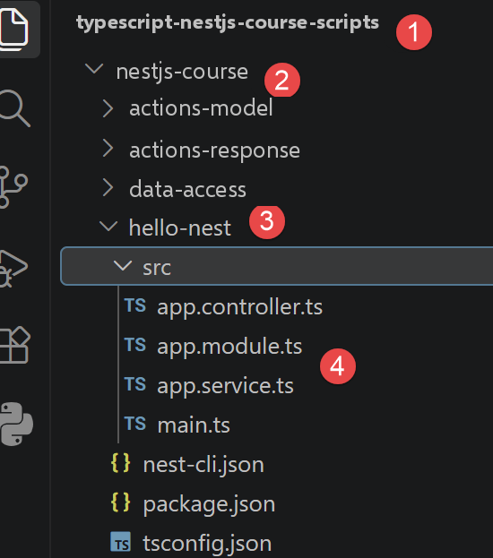
8.4.1.2. 项目设置
这个项目已经包含在您下载的脚本目录中，可以直接使用——它就是上面截图中（标号 [3]）所示的 nestjs-course/hello-nest/ 文件夹，所有文件都已就位。因此您不需要创建任何东西：只需在 VSCode 中打开这个现有文件夹（如果还没有运行过，请运行 npm install ——参见本文档的简介），然后直接进入下一节。
仅供参考，如果您想自己从头重新创建这个项目（在一个空文件夹中，位于课程目录结构之外），它是这样生成的：
这条命令会生成一个包含以下基本文件的项目：
8.4.1.3. NestJS 应用程序的架构
仅这四个文件就体现了 NestJS 的 MVC 架构：入口点（main.ts）、根模块（app.module.ts）、控制器（app.controller.ts）和服务（app.service.ts）。
8.4.1.4. 控制器
src/app.service.ts
我们来说明这段代码：
- 第 1 行：[// src/app.service.ts] ——一条简单的注释，指明相关文件，对执行没有影响——当依次展示多个文件时，便于对照。
- 第 2 行：[import { Injectable } from '@nestjs/common';] ——与标准 TypeScript 一样，我们显式导入所使用的每个元素，这里是从 @nestjs/common 导入，该模块包含 NestJS 的大部分装饰器和工具类。
- 第 4 行：[@Injectable()] ——装饰器 是紧挨着放在 TypeScript 的类、方法或参数上方的一种注解（以 @ 符号开头），它在不改变其代码的前提下修改或扩展其行为——几乎整个 NestJS 的词汇体系都建立在这一机制之上。@Injectable() 把这个类标记为 提供者：NestJS 会自行创建它，并自动提供给在构造函数中请求它的任何其他类，完全不必编写 new AppService()。
- 第 5 行：[export class AppService {] ——一个普通的 TypeScript 类，被导出以便在别处导入（这里由控制器导入）——除了它前面的装饰器之外，此处没有任何 NestJS 特有的内容。
- 第 6 行：[ getHello(): string {] ——一个普通方法；: string 声明返回值的类型——这是 TypeScript 特有的功能，JavaScript 中没有。
- 第 7 行：[ return 'Hello, world!';] ——实际返回的内容——目前只是一个固定的字符串。
src/app.controller.ts
我们来说明这段代码：
- 第 1 行：[// src/app.controller.ts] ——说明同上：一条对执行没有影响的注释。
- 第 2 行：[import { Controller, Get } from '@nestjs/common';] ——导入稍后要用到的两个装饰器：@Controller （用于类）和 @Get （用于方法）。
- 第 3 行：[import { AppService } from './app.service';] ——导入刚才定义的服务，以便把它注入到下面的构造函数中。
- 第 5 行：[@Controller()] ——@Controller() 装饰其后的类，使其成为控制器：NestJS 会把与其路由对应的 HTTP 请求发送给它。括号中的参数是可选的 前缀 ，会被加到该类所有路由的开头——使用 @Controller('api') 时，被装饰为 @Get('x') 的方法会响应 /api/x。这里前缀为空：下面定义的“hello”路由因此直接响应 /hello。
- 第 6 行：[export class AppController {] ——控制器类，按惯例命名为 <Name>Controller。
- 第 7 行：[ constructor(private readonly appService: AppService) {}] ——构造函数声明了一个参数 appService ，类型为 AppService，前面带有 TypeScript 修饰符 private readonly，它用一行代码既声明该参数，又把它注册为实例的属性（this.appService）。NestJS 检测到该控制器需要一个 AppService，便创建它的一个实例（只有一个，由整个应用程序共享），并在这里自动提供：这就是前面提到的 基于构造函数的依赖注入 ——您从不需要编写
new AppService()。 - 第 9 行：[ @Get('hello')] ——@Get('hello') 把其后的方法与 HTTP 路由 GET /hello 关联起来：正是这个装饰器使该动作在服务器运行后可通过可测试的地址 http://localhost:3000/hello 访问。其他装饰器对其他动词方法起同样的作用——@Post()、@Put()、@Delete()、@Patch()——我们将在下一章详细介绍。
- 第 10 行：[ hello(): string {] ——方法名
hello与路由没有内在联系：NestJS 调用它，仅仅是因为它上面一行用@Get装饰了它。给它起一个反映该动作的名字，只是为了便于阅读的约定。 - 第 11 行：[ return this.appService.getHello();] ——控制器把工作委托给注入的服务，而不是自己编写响应：它始终只是一个简单的路由层，业务逻辑则位于服务中。
src/app.module.ts
我们来说明这段代码：
- 第 1 行：[// src/app.module.ts] ——仍然是同一类用于标识文件的注释，对执行没有影响。
- 第 2 行：[import { Module } from '@nestjs/common';] ——导入第 6 行使用的 @Module 装饰器。
- 第 6 行：[@Module({] ——@Module({...}) 装饰其后的类，使其成为模块：它把应用程序中一个连贯的部分组合在一起，并在作为参数传入的对象中声明它由什么组成。可用的属性有四个（这里只用了两个）：controllers （该模块公开的控制器）、providers （该模块提供的服务，可在模块内部注入）、imports （该模块所依赖的其他模块）和 exports （该模块提供给导入它的模块使用的提供者）。
- 第 7 行：[ controllers: [AppController],] ——声明前面定义的 AppController 属于这个模块——没有这个声明，NestJS 会忽略这个控制器，它的路由也不会响应任何请求。
- 第 8 行：[ providers: [AppService],] ——同样，声明 AppService 属于这个模块，使其可用于依赖注入——正是这个数组使控制器能够在其构造函数中接收它。
- 第 10 行：[export class AppModule {}] ——应用程序的根模块，按惯例命名为 AppModule：main.ts 正是用它来启动服务器。
8.4.1.5. 执行
在浏览器中打开 http://localhost:3000/hello 时，您会得到响应 “Hello, world!”。@Get('hello') 装饰器把 hello() 方法映射到 URL 中的 /hello 端点；NestJS 原样发送返回的字符串。默认情况下，npm run start:dev 在 3000 端口启动服务器——后面各章的所有示例中我们看到的都是这个端口。
8.4.1.6. 结论
我们刚刚编写的控制器/服务/模块三件套是任何 NestJS 应用程序的骨架；在后面的章节以及第 6 章的案例研究中，我们会在更大的规模上看到这种结构。
8.4.2. NestJS 的 MVC 架构
8.4.2.1. 模块
@Module 装饰器接受四个主要属性：imports （该模块所依赖的其他模块）、controllers （它公开的控制器）、providers （它提供的服务，既供自身使用，也供导入它的模块使用）以及 exports （它提供给其他模块使用的提供者）。NestJS 应用程序是一棵模块树，其根模块 AppModule 在启动时把它们全部组装起来，很像一份总体的项目概览（熟悉 Spring 的读者会发现，这相当于中央配置文件的角色）。
8.4.2.2. 控制器
控制器是一个用 @Controller(prefix) 标注的类：它接收 HTTP 请求，并向客户端返回响应。可选的 前缀会被添加到该类所有路由的前面——使用 @Controller('users') 时，被 @Get(':id') 装饰的方法 会响应 /users/:id，而不是 /:id。控制器的每个方法都通过对应所需动词的装饰器与某个路由关联：@Get 用于读取，@Post 用于创建，@Put 用于替换，@Patch 用于部分修改，@Delete 用于删除。路由的路径可以包含可变段，以 : 引入，如 @Get('users/:id') （:id 会捕获请求的 URL 中该位置上的值）。在下一章中，我们将详细介绍用于获取请求所提供信息的装饰器（@Query、@Param、@Body……）。
8.4.2.3. 提供者与依赖注入
用 @Injectable() 标注的类 就是提供者：只要它被列在某个模块的 providers 数组中（可以是该模块自己的，也可以是导出它的模块的），NestJS 就会在构造函数中请求它的任何地方自动实例化并注入它。默认情况下，NestJS 提供者是 单例：应用程序启动时创建一个实例，所有需要它的组件共享同一个实例，而不是为每个请求重新创建一个新实例（熟悉 Spring 的读者会发现，这相当于 Bean 的默认行为）。
8.4.2.4. 与 Spring MVC 的对照小结
下表仅供参考：它面向已经熟悉 Spring MVC、希望运用已有知识的读者。理解它并不是学习本课程其余部分所必需的——这里列出的所有 NestJS 术语，都会在本章及后续章节中独立于 Spring 加以解释。
- @Controller （Spring）↔ @Controller （NestJS）
- @GetMapping / @RequestMapping （Spring）↔ @Get()、@Post()……（NestJS）
- @RequestParam （Spring）↔ @Query() （NestJS）
- @PathVariable （Spring）↔ @Param() （NestJS）
- @RequestBody （Spring）↔ @Body() （NestJS）
- @Service / @Repository + @Autowired （Spring）↔ @Injectable() + 构造函数注入（NestJS）
- 配置文件 / 组件扫描（Spring）↔ @Module （NestJS）
- ResponseEntity<T> （Spring）↔ 直接返回对象，或用 @Res() 获得完全控制（NestJS）
8.5. 动作：响应

本章逐个动作地探讨 NestJS 控制器构造发送给客户端的响应的各种方式。每个动作都可以在使用 curl 或 Postman 的新项目 中测试，该项目用 nest new actions-response 创建；与上一章一样，npm run start:dev 在 3000 端口启动服务器，因此下面所有动作的 URL 形式都是 http://localhost:3000/……本章的所有动作都是同一个控制器 AppController 的方法，该控制器用 @Controller() 标注且没有前缀——与上一章一样，因此每个动作的 @Get(...) 中括号里的参数直接给出了它的 URL。
8.5.1. NestJS 应用程序的组成
该应用程序由三个文件组成（见上面的 4）
8.5.1.1. src/app.controller.ts
这个文件把六个方法合并到一个类 AppController 中，这些方法所使用的装饰器（Header、HttpCode、Redirect、Res）被集中放在文件顶部。
我们稍后再回头讨论这六个方法。
8.5.1.2. src/app.module.ts
我们来说明这段代码：
- 第 5 行：@Module({ ——与上一章中 hello-nest 项目的根模块不同，这里没有
providers属性：这个项目没有定义任何服务；所有逻辑都包含在控制器的方法本身之中。 - 第 6 行：controllers: [AppController], ——唯一需要的声明：它把 AppController（也就是它的六条路由）与这个模块关联起来。
8.5.1.3. src/main.ts
入口点在各个项目中保持不变：它使用与上一章 bootstrap() 骨架完全相同的结构，也就是 hello-nest 项目中的那个：从根模块创建应用程序，然后监听 3000 端口。
8.5.1.4. [/a01]：返回文本
我们来说明这段代码：
- 第 1 行：[@Get('a01')] ——@Get('a01') 把这个方法与路由 GET /a01 关联起来——与上一章一样，这个装饰器把 URL 与方法联系在一起。因此，服务器启动（npm run start:dev）后，可通过 http://localhost:3000/a01 访问该动作。
- 第 2 行：[a01(): string {] ——方法名 a01与路由没有内在联系：NestJS 调用它，仅仅是因为它上面一行用 @Get 装饰了它。像本章通篇所做的那样，给它起与动作相同的名字，只是为了便于阅读的约定，以便轻松找到某个 URL 对应的动作。
- 第 3 行：[ return 'Hello from the action [/a01]';] ——该方法只是返回一个字符串。
NestJS 把返回的字符串原样发送给客户端，并带有 Content-Type 头 ，其值为 text/html。
8.5.1.5. [/a02]：返回一个对象，自动序列化为 jSON
我们来说明这段代码：
- 第 1 行：[@Get('a02')] ——可通过 http://localhost:3000/a02访问。
- 第 2 行：[a02(): object {] ——这一次，方法声明它返回一个 object 而不是 string ——正是这个返回类型会改变 NestJS 的行为；见下文。
- 第 3 行：[ return { message: 'Hello', value: 42 };] ——一个带有两个属性的 JavaScript/TypeScript 对象字面量。
只要方法返回一个对象（或数组），NestJS 就会自动把它序列化为 jSON，并把 Content-Type 头 设置为：application/json ——您无需做任何特殊处理就能得到 jSON 响应，这与产生纯文本的 [/a01] 字符串不同。
8.5.1.6. [/a03]：更改 HTTP 状态码
我们来分解这段代码：
- 第 1 行：[import { Get, HttpCode } from '@nestjs/common';] ——导入下面使用的两个装饰器。
- 第 3 行：[@Get('a03')] ——可通过 http://localhost:3000/a03访问。默认情况下，@Get 动作以 HTTP 状态码 200 响应（这是随每个响应返回的三位数字，告诉客户端请求是否成功——200：成功，404：未找到资源，500：服务器错误，等等）。
- 第 4 行：[@HttpCode(201)] ——@HttpCode(201) 显式强制设定该动作返回的状态码，这里是 201（Created），而不是默认的 200——这里纯粹是出于教学目的，用来演示这个装饰器，它通常应保留给真正创建资源的动作（通常是 @Post 而不是 @Get）。普通浏览器不会显示收到的状态码；要验证它，请使用 Postman 或开发者工具中的“网络”选项卡。
8.5.1.7. [/a04]：添加 HTTP 头
我们来说明这段代码：
- 第 1 行：[import { Get, Header } from '@nestjs/common';] ——导入下面使用的两个装饰器。
- 第 3 行：[@Get('a04')] ——可通过 http://localhost:3000/a04访问。
- 第 4 行：[@Header('X-My-Header', 'a-value')] ——头 （HTTP）是随响应一起发送的附加信息，与消息正文分开——前面提到的 Content-Type 就是一个标准的例子。@Header(name, value) 在这里添加了一个自定义头 X-My-Header，其值为 a-value。与状态码一样，普通浏览器默认不显示收到的头：您需要 Postman 或开发者工具来查看它们。
8.5.1.8. [/a05]：重定向客户端
我们来说明这段代码：
- 第 1 行：[import { Get, Redirect } from '@nestjs/common';] ——导入下面使用的两个装饰器。
- 第 3 行：[@Get('a05')] ——可通过 http://localhost:3000/a05 访问——在浏览器中打开时，这个 URL 会立即重定向到 https://nestjs.com。
- 第 4 行：[@Redirect('https://nestjs.com', 302)] ——@Redirect(url, code) 使该动作以 HTTP 重定向响应，重定向到 url，状态码为 code （如果省略第二个参数，默认值是 302，Found）——浏览器会自动跟随这个重定向，无需用户干预。
- 第 5 行：[a05() {}] ——方法体是空的：所有工作都由它上面的 @Redirect 装饰器完成；方法本身没有任何东西需要返回。
8.5.1.9. [/a06]：直接访问 Express 响应对象
我们来说明这段代码：
- 第 1 行：[import { Get, Res } from '@nestjs/common';] ——除了已经熟悉的 @Get 之外，还导入第 5 行使用的 @Res 装饰器。
- 第 2 行：[import { Response } from 'express';] ——导入 Express 提供的 TypeScript Response 类型 （Express 是 NestJS 默认依赖的 HTTP 服务器；参见“简介”一章），用于给下面的参数指定类型。
- 第 4 行：[@Get('a06')] ——可通过 http://localhost:3000/a06访问。
- 第 5 行：[a06(@Res() res: Response): void {] ——@Res() 把原始的 Express 响应对象直接作为参数传给方法，这里命名为 res。这与 [/a01]/[/a02] 相反：这里的代码不再让 NestJS 根据返回值构造响应，而是完全掌控整个 HTTP 响应。
- 第 6 行：[ res.status(200).json({ response: 'built by hand' });] ——直接调用 Express API 的方法——status(200) 设置状态码，json({...}) 把对象序列化为 jSON 并实际发送响应（这两个步骤通常是自动的，如 [/a02] 中那样）。
运行 NestJS 应用
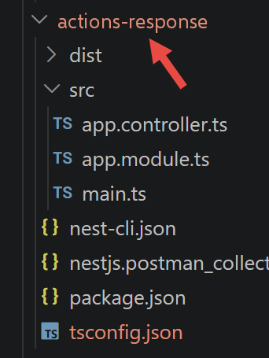
在项目根目录的终端中，输入以下命令：
你将收到以下响应：
8.5.2. Postman 测试
进行 Postman 测试时，可以使用以下请求集合：

以下是这六个动作的 Postman 测试：
8.5.2.1. 动作 a01

8.5.2.2. 动作 a02

8.5.2.3. 动作 a04

要查看服务器发送的头：
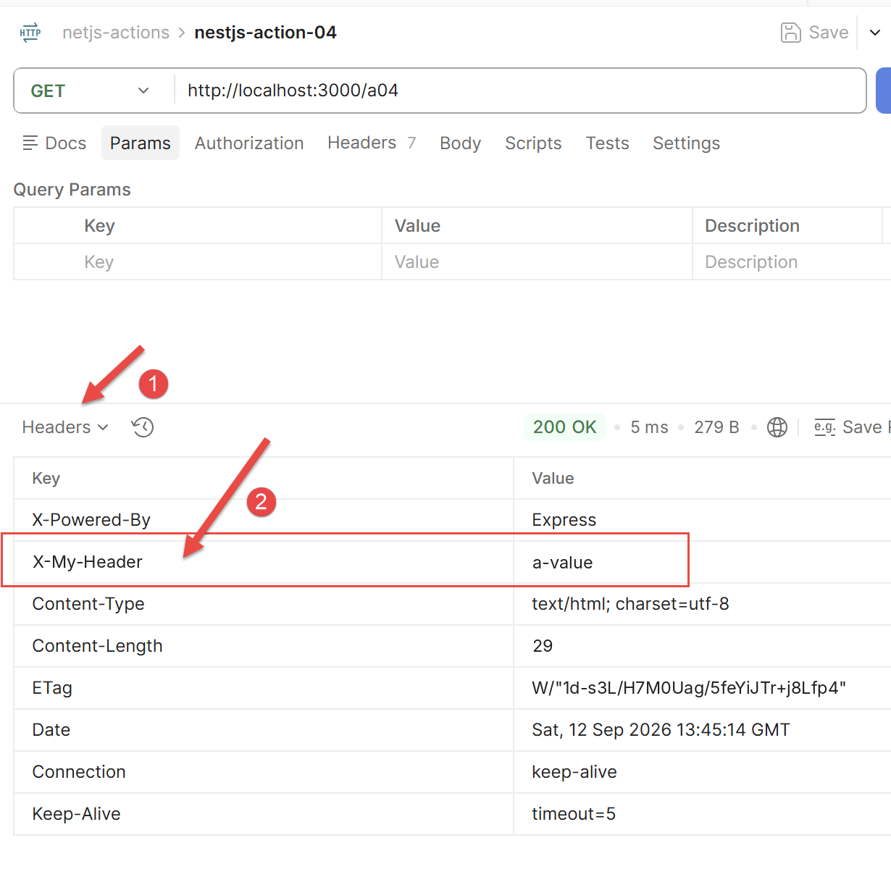
8.5.2.4. 动作 a05

在 [1] 中，是 Postman 客户端被重定向到的站点。
8.5.2.5. 动作 a06

8.5.3. 结论
因此，NestJS 提供了两种构造响应的方式：要么让框架根据方法返回的值自动构建——这是最常见的情况，如 [/a01] 到 [/a05] 所示——要么使用 @Res()，完全手动地控制 HTTP 响应，代价是一切都必须自己管理（[/a06]）。
8.6. 动作：模型
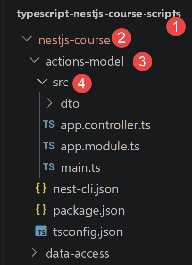
本章是上一章的对应篇：重点不再是构建响应，而是获取客户端请求所提供的信息（URL 参数、发送的请求体、请求头等）。与上一章一样，所有动作都是同一个控制器 AppController 的方法，该控制器带有 不带前缀的 @Controller() 装饰器，服务器默认监听 3000 端口——因此下面的 URL 都是如下形式： http://localhost:3000/....
8.6.1. NestJS 应用的组成部分
我们来仔细看看构成 actions-model 项目的文件（见上文第 4 点）。
8.6.1.1. src/app.controller.ts
单个类 AppController 包含八个方法，使用了所有装饰器（@Query、@Param、@Body、@Headers、@Session、@Req）以及其中一个或多个方法所使用的 CalculationDto （见 [/m04] 和 [/m05]）。我们稍后会讨论这些方法。
8.6.1.2. src/app.module.ts
与上一章的说明相同：这里同样没有 providers，因为本项目没有定义任何单独的服务。
8.6.1.3. src/main.ts
我们来解读这段代码：
- 第 9 行：app.use(session({ secret: 'xxx', resave: false, saveUninitialized: false })); —— 安装 Express 中间件
express-session——正是这一行（在这里只出现一次，并作用于整个应用）启用了 [/m07] 中所见的会话计数器。secret 用于对会话 Cookie 进行签名；在生产环境中，它必须来自环境变量，绝不应以明文形式写在代码中。 - 第 10–15 行：app.useGlobalPipes(new ValidationPipe({ ... })); —— 为应用中的所有控制器全局声明与 ValidationPipe 相同的管道，即局部应用于 [/m05] 中、通过 @UsePipes 声明的那个。两个选项
transform: true和enableImplicitConversion: true可在验证之前启用自动类型转换（具体来说，是将URL中的字符串转换为数字）。
8.6.1.4. [/m01]：GET 的参数
我们来解读这段代码：
- 第 1 行：[@Get('m01')] —— 与上一章一样，此装饰器将该方法与路由 GET /m01 关联起来。
- 第 2 行：[m01(@Query('name') name: string, @Query('age') age: string): object {] —— @Query(name) 是一个新的装饰器，这次应用于方法参数，而不是类或方法本身：它从 查询字符串 （URL 中 ? 之后的部分，形式为 key=value ，以 &分隔）中提取一个参数，并将其直接作为参数提供——已经命名且带有类型——无需你自己去获取。这里，@Query('name') 提取 "name" 参数并将其赋给变量
name，age同理。因此，可以在以下地址测试该动作： http://localhost:3000/m01?name=Serge&age=60，它将返回 name = "Serge" 和 age = "60" （查询字符串的值始终以字符串形式接收，即使它看起来像数字）。 - 第 3 行：[ return { name, age };] —— 是 { name: name, age: age } 的简写形式：当属性名和变量名相同时，只需写一次名称。
8.6.1.5. [/m02]：URL 的组成部分
我们来解读这段代码：
- 第 1 行：[@Get('m02/:id')] —— 路由路径中的 :id 是一个可变片段 （路由参数）：NestJS 会捕获所请求 URL 中该特定位置上出现的内容。因此，对 http://localhost:3000/m02/5 的请求会捕获 5；对 /m02/abc 的请求则会捕获 abc。
- 第 2 行：[m02(@Param('id') id: string): object {] —— @Param(name) 是与 @Query 互补的装饰器，如 [/m01] 中所见：@Query 读取查询字符串（? 之后），而 @Param 读取路径本身的可变片段（这里是 :id）。因此，@Param('id') 会将捕获到的值注入到 id 变量中。
- 第 3 行：[ return { id };] —— 只是返回收到的值，并将其封装在一个对象中。
8.6.1.6. [/m03]：POST 的参数
我们来解读这段代码：
- 第 1 行：[@Post('m03')] —— @Post() 是与 @Get() 对应的、用于 HTTP POST 动词的装饰器，该动词通常用于向服务器发送数据（创建资源、提交表单等），而不是读取一个简单的 URL。与前面的动作不同，这个动作不能通过直接在浏览器中输入 URL 来测试（浏览器只会发出 GET 请求）：你需要一个能够发送 POST
- 第 2 行：[ m03(@Body() body: any): object {] —— @Body() 不带参数时，这次注入的是整个请求体（不同于 @Query/@Param，它们各自只读取单个命名字段）；
any是TypeScript类型，表示“任意类型”，这里使用它是因为尚未对接收到的数据强加任何特定格式（带类型的版本见[/m04]）。 - 第 3 行：[ return body;] —— 原样返回收到的请求体，以便验证发送的内容。
8.6.1.7. [/m04]：将提交的参数映射到一个类
dto/calculation.dto.ts
我们来解读这段代码：
- 第 1 行：[// dto/calculation.dto.ts] —— 用于标识文件的注释；对执行没有任何影响。
- 第 2 行：[export class CalculationDto {] —— 一个仅用于描述预期数据格式的类，不含任何方法——这称为 DTO （数据传输对象（Data Transfer Object）），是一种简单的带类型数据结构，用于在程序的一个部分与另一个部分之间传递信息（这里是从客户端传到控制器）。
- 第 3 行：[ married: string;] —— 一个带类型的属性：married 必须是字符串——TypeScript 会在编译时检查此类型。
- 第 4 行：[ children: number;] —— “children” 必须是数字。
- 第 5 行：[ salary: number;] —— 薪资 必须是数字。
我们来拆解这段代码：
- 第 1 行：[@Post('m04')] —— 与 [/m03] 的说明相同：请使用 Postman 或 curl 来测试，而不是直接在浏览器的地址栏中测试。
- 第 2 行：[m04(@Body() data: CalculationDto): CalculationDto {] —— 仍然是 @Body()，与 [/m03] 中一样，但这次
data变量的类型是 CalculationDto ，而不是any：NestJS 会自动把收到的 jSON 转换为该类的实例，其属性具有名称和类型（married、children、salary），而不是某个通用的、无类型的对象——这使得 TypeScript 编译器能够进行检查，编辑器能够自动补全。注意：在这个阶段，仍然无法保证收到的数据确实符合此格式（客户端可能发送任何内容）——实际的验证见[/m05]。
8.6.1.8. [/m05]：验证动作模型
我们为 NestJS 安装两个用于验证的配套库：
dto/calculation.dto.ts
我们来解读这段代码：
- 第 1 行：[import { IsIn, IsInt, Min } from 'class-validator';] —— class-validator 是一个独立于 NestJS 的库（但与它搭配使用非常广泛），它允许你使用装饰器直接在类的属性上定义验证规则——例如 @IsIn、@IsInt、和 Min，这些都在这里导入。
- 第 4 行：[ @IsIn(['yes', 'no'])] —— @IsIn([...]) 要求其后属性（married）的值属于给定列表——这里只能是 'yes' 或 'no'；任何其他值都会被拒绝。
- 第 7 行：[ @IsInt() @Min(0)] —— 可以把两个装饰器依次应用于同一个属性：@IsInt() 要求为整数，并且 @Min(0) 要求值大于或等于 0 ——这两条规则同时适用于 “children”。
我们来解读这段代码：
- 第 1 行：[import { Body, Post, UsePipes, ValidationPipe } from '@nestjs/common';] —— 除了已知的装饰器之外，还导入了 UsePipes 和 ValidationPipe
- 第 3 行：[@Post('m05')] —— 使用 Postman 或 curl （POST）测试，而不是在浏览器的地址栏中测试。
- 第 4 行：[@UsePipes(new ValidationPipe())] —— 管道。NestJS 中的管道是一种介于收到的请求和方法代码之间的机制，用于在数据到达控制器之前对其进行转换或验证。ValidationPipe 由 NestJS 提供，是标准的验证管道：它会重新评估应用于 DTO 的 class-validator 装饰器（@IsIn、@IsInt、@Min……），并自动拒绝任何数据不符合这些装饰器要求的请求——返回 HTTP 400（Bad Request）响应——而无需你自己编写一条
if语句。@UsePipes() 是在特定方法上启用管道的装饰器。
8.6.1.9. [/m06]：访问 HTTP 头
我们来解读这段代码：
- 第 1 行：[@Get('m06')] —— 可通过以下地址访问： http://localhost:3000/m06。
- 第 2 行：[m06(@Headers('user-agent') userAgent: string): object {] —— @Headers(name) 从传入的请求中读取某个特定的 HTTP 头（与上一章讨论的 @Header() 相对，后者 添加一个头到传出的响应中——同一个词，含义相反，取决于你是在读取还是在写入）。这里，@Headers('user-agent') 获取 User-Agent 头（发送请求的浏览器或工具的名称，由任何客户端自动发送）。不带参数时，@Headers() 会返回一个包含所有请求头的对象。
- 第 3 行：[ return { userAgent };] —— 返回读取到的值，并将其封装在一个对象中。
8.6.1.10. [/m07]：访问会话
main.ts
我们来解读这段代码：
- 第 2 行：[app.use(session({ secret: 'xxx', resave: false, saveUninitialized: false }));] —— app.use(...) 注册一个 Express 中间件——在每个传入请求到达任何控制器之前，都会对每个请求执行的处理过程。这里，session 中间件（由 express-session 库提供）为整个应用设置会话管理：
secret用于对会话 Cookie 进行签名（以防止其被篡改），而resave和saveUninitialized是控制会话何时在服务器端实际保存的选项。
我们来拆解这段代码：
- 第 1 行：[import { Get, Session } from '@nestjs/common';] —— 导入 @Session 装饰器
- 第 3 行：[@Get('m07')] —— 可通过以下地址访问： http://localhost:3000/m07 ——多次刷新页面会使计数器递增；它的值在请求之间保存在服务器端。
- 第 4 行：[m07(@Session() session: Record<string, any>): object {] —— 会话 是与特定访问者关联的存储空间，在服务器端跨多个连续请求得以保留——不同于普通变量，普通变量会在每个新请求时被重置。客户端通过一个包含会话 ID 的 Cookie 来识别，浏览器在收到它之后会在每个请求中自动发送。@Session() 直接将这个存储空间作为参数注入到方法中。
- 第 5 行：[ session.counter = (session.counter ?? 0) + 1;] —— ?? 运算符（空值合并）仅当左侧为 null 或 undefined 时才返回其右侧——这里，它在第一次访问时将计数器初始化为 0，然后在随后的每个请求中将其加 1。
- 第 6 行：[ return { counter: session.counter };] —— 返回存储在会话中的计数器的当前值。
这正是我们在第 6 章中用来存储税额计算服务器的身份验证信息和模拟列表的 express-session。
8.6.1.11. [/m08]：访问整个请求
我们来拆解这段代码：
- 第 1 行：[import { Get, Req } from '@nestjs/common';] —— 导入 @Req 装饰器
- 第 2 行：[import { Request } from 'express';] —— 导入 Express 提供的 TypeScript Request 类型，用于为下面的参数指定类型。
- 第 4 行：[@Get('m08')] —— 可通过以下地址访问： http://localhost:3000/m08。
- 第 5 行：[m08(@Req() req: Request): object {] —— @Req() 直接注入原始的 Express 请求对象及其包含的一切（方法、URL、请求头、请求体、参数等），而不是像 @Query、@Param、@Body、@Headers或 @Session 那样一次只注入一项信息。在请求一侧，这正好相当于上一章中 @Res() 在响应一侧对 [/a06] 所起的作用：NestJS 提供的自动化更少，但可以完全、毫无保留地访问。
- 第 6 行：[ return { method: req.method, url: req.url };] —— 直接读取 Express 请求对象的两个属性：method （所使用的 HTTP 动词）和 url （所请求的路径）。
运行 NestJS 应用
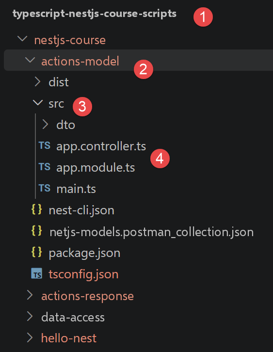
在项目根目录的终端中，输入以下命令：
你将收到以下响应：
8.6.2. Postman 测试
进行 Postman 测试时，可以使用以下请求集合：
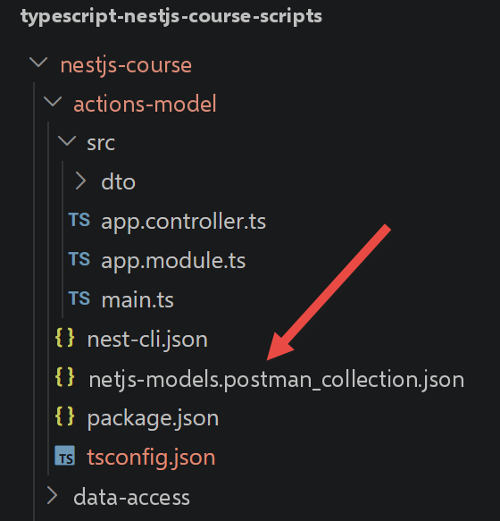
以下是该应用八个方法的 Postman 测试：
8.6.2.1. 动作 m01

8.6.2.2. 动作 m02
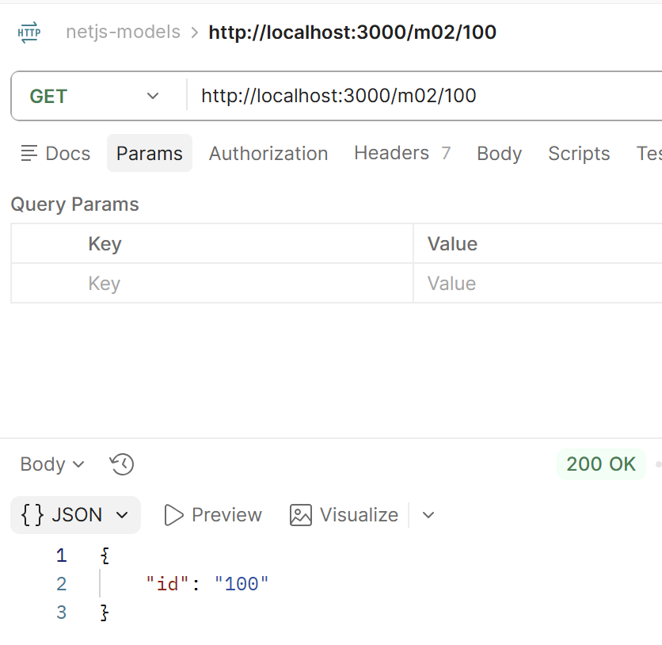
8.6.2.3. 动作 m03
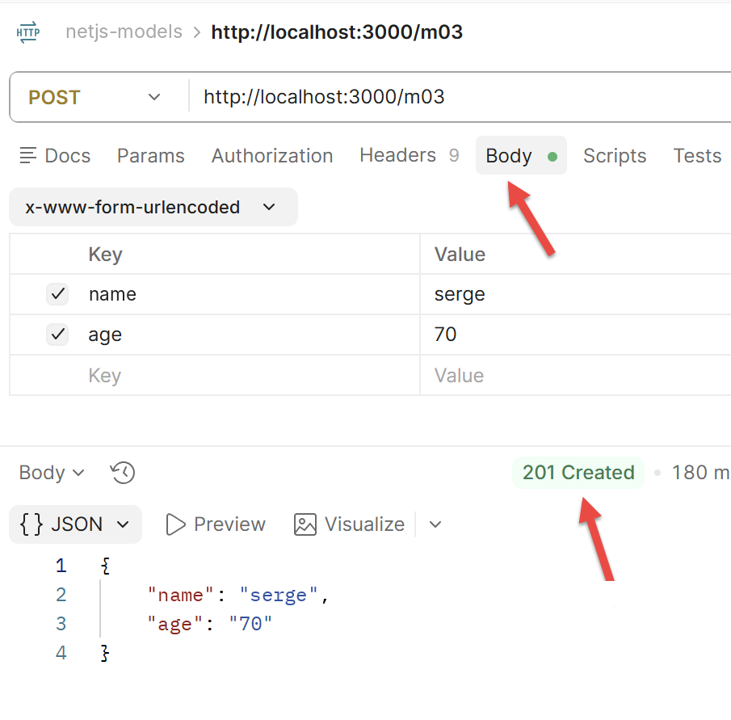
8.6.2.4. 动作 m04

8.6.2.5. 动作 m05

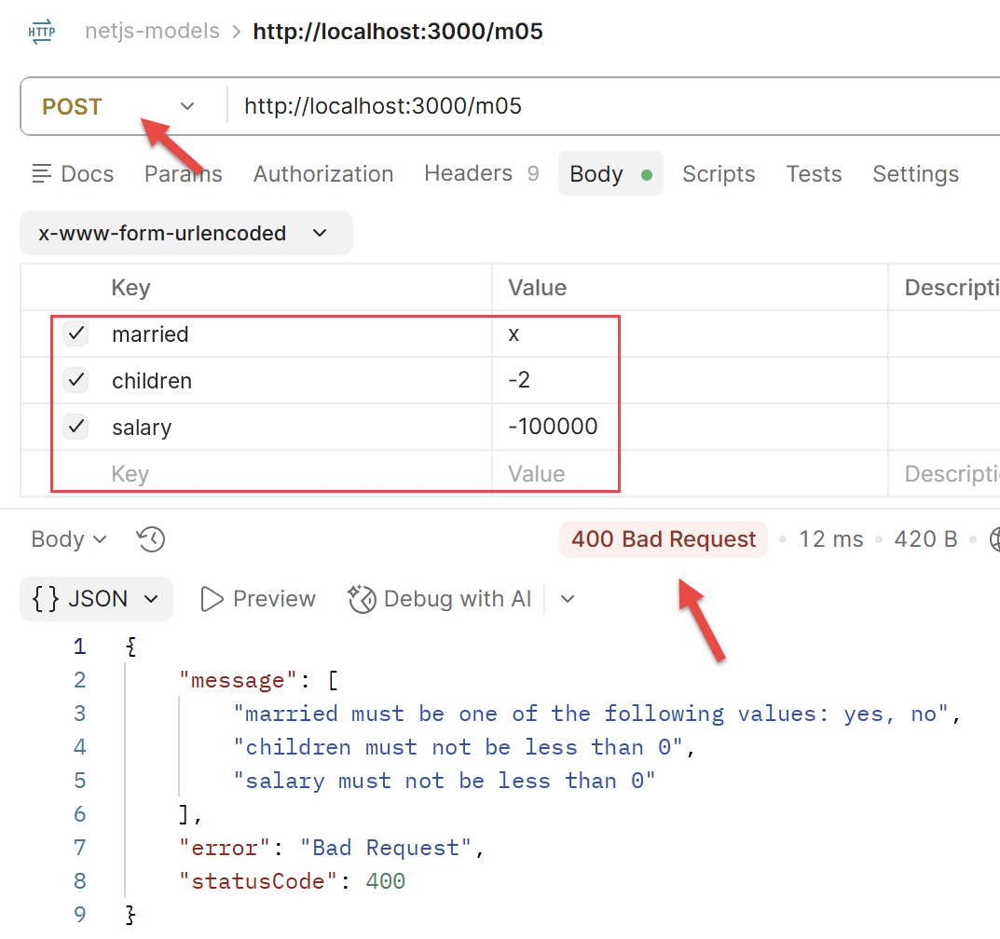
8.6.2.6. 动作 m06

8.6.2.7. 动作 m07
3 次请求之后：

8.6.2.8. 动作 m08

8.6.3. 结论
@Query、@Param、@Body、@Headers和 @Session 涵盖了绝大多数需求；@Req() 仍可用于对请求的完全、毫无保留的访问——这是我们案例研究中 [m06] 动作所选择的方式，原因与 [/a06] 动作相同。
8.7. 数据访问：NestJS 与数据库
NestJS 提供了多种访问数据库的方式：Node 生态中并存三种方法，从最接近 SQL 的到最接近使用带装饰器实体的 ORM 的——这与 Spring Data 不同，后者对 Java 开发者只强加一种方法。

8.7.1. 原生驱动：手工编写的 [DAO] 层
Node 为每种数据库管理系统提供了轻量级驱动（用于 MySQL 的 mysql2 、用于 PostgreSQL 的 pg 等），它们直接公开 SQL：你自己编写查询，代码与数据库之间没有抽象层。这就是我们案例研究中 [DAO] 层所采用的方法：一个 @Injectable() 服务打开连接并执行显式的 SQL 查询。
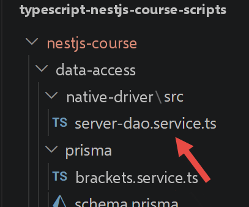
摘自 src/model/server-dao.service.ts（章节 [case study]）：
我们来解读这段代码：
- 第 1 行：[import mysql from 'mysql2/promise';] —— 导入适用于 Node.js 的 MySQL/MariaDB 驱动（mysql2 包）；mysql2/promise 子路径提供基于 Promise 的变体（因此可以配合
await使用），而不是旧式的基于回调的变体； - 第 3 行：[@Injectable()] —— 此装饰器将其后的类标记为 NestJS 提供者：NestJS 可以自行实例化并注入到另一个类的构造函数中的类（这里，ServerDaoService 将被注入到某个动作控制器中；见下一章）——没有此装饰器，NestJS 就无法自动创建它；
- 第 6 行：[const connection = await mysql.createConnection({ ... })] —— mysql.createConnection(...) 打开到 MySQL/MariaDB 服务器的新网络连接，主机、数据库、用户名和密码直接作为参数提供；
await会暂停函数的执行，直到连接成功建立； - 第 12 行：[const [brackets] = await connection.query('select ... order by id')] —— connection.query(...) 执行以字符串形式传入的 SQL 查询；该方法返回一个包含两个元素的数组，其中第一个元素（这里通过解构 [brackets] 获取）包含读取到的行——不生成任何 SQL，也没有对象关系映射：写出来的文本就是发送给数据库的文本；
- 第 16 行：[await connection.end();] —— 读取完成后显式关闭连接——使用原生驱动时，连接生命周期的管理完全由代码负责，这与后面介绍的两个 ORM 示例不同。
这种方式让你完全控制所执行的 SQL，没有任何“魔法”或自动生成查询：代码中看到的，就是发送给 MySQL 的内容（这与 Spring MVC 中的 JdbcTemplate 或在 PHP 中直接使用 PDO 的理念相同，适合熟悉这些环境之一的读者）。
8.7.2. TypeORM：相当于 Spring Data JPA
TypeORM 是与 NestJS 搭配最常用的 ORM：在这里，表被定义为带装饰器的 TypeScript 类（即“实体”），并通过注入的 Repository 来查询数据库，简单场景下无需编写任何 SQL 查询（就概念而言，这是与 Spring Data JPA / Hibernate 最相似的 ORM，适合熟悉该环境的读者）。

8.7.2.1. 模块配置
在应用的根模块（app.module.ts）中，使用 TypeOrmModule.forRoot(...) 一次性声明数据库连接：
app.module.ts
我们来解读这段代码：
- 第 1 行：[// app.module.ts] —— 这条注释只是指出代码片段的来源：这个代码块 TypeOrmModule.forRoot({...}) 是应用根
imports列表中的一个元素，该列表属于@Module({...})，而不是一个独立的文件； - 第 2 行：[TypeOrmModule.forRoot({ ... })] —— forRoot(...) 为整个应用一次性配置数据库连接——相当于我们之前在不使用 NestJS 的 TypeORM 中见过的 DataSource （第 2 章）；之后，每个需要特定实体的模块只需使用 TypeOrmModule.forFeature(...) 来声明它，如下所示；
- 第 9 行：[entities: [Bracket],] —— TypeORM 必须识别的实体类列表（这里只有一个：Bracket），用于在 TypeScript 类和 SQL 表之间建立对应关系；
- 第 10 行：[synchronize: false,] —— 如果设置为 true，TypeORM 会自动修改数据库模式以匹配实体——这在项目最初阶段很有用，但一旦线上数据库中有了数据就很危险：这里我们将其保持为 false ，这也是使用现有数据库时的推荐做法。
8.7.2.2. 实体
实体是一个普通的 TypeScript 类，通过装饰器为其添加将其映射到 SQL 表及其列所需的信息：
entities/bracket.entity.ts
我们来解读这段代码：
- 第 1 行：[import { Entity, PrimaryGeneratedColumn, Column } from 'typeorm';] —— 我们从 typeorm 包中导入本文件后面会用到的三个装饰器；
- 第 3 行：[@Entity('tbbrackets')] —— 此装饰器声明其后的类表示一个 SQL 表：'tbbrackets' 参数指定该表在数据库中的实际名称——如果没有它，TypeORM 会根据类名推断出一个表名，而这在这里并不合适，因为现有的表名为 tbbrackets，而不是 bracket；
- 第 5 行：[@PrimaryGeneratedColumn()] —— 将其后的属性（id）标记为表的主键，其值由数据库自动生成（自增）——因此在创建表时，你无需自己为 id 指定值；
- 第 8 行：[@Column('decimal')] —— 将其后的属性（limits）指定为表中的普通列；'decimal' 参数指定该列的 SQL 类型——另外两列（coeffR、coeffN）以相同的方式声明。
@Entity、@Column、@PrimaryGeneratedColumn：所用的术语与 JPA（@Entity、@Column、@Id + @GeneratedValue）几乎完全相同——TypeORM 被刻意设计成让熟悉 Hibernate 的人感到亲切，但这里的内容并不以具备此类知识为前提：仅靠这些装饰器就足以把类映射到表。
8.7.2.3. Repository
Repository 是提供表中各行访问能力的对象，常见操作无需自己编写 SQL 查询：
brackets.service.ts
我们来解读这段代码：
- 第 1 行：[import { InjectRepository } from '@nestjs/typeorm';] —— InjectRepository 是 @nestjs/typeorm 特有的装饰器，可让你请求注入某个特定的 Repository （见下文）；
- 第 4 行：[@Injectable()] —— 如前所述，此装饰器将 BracketsService 变成 NestJS 可以实例化并注入到其他地方的提供者——这里是注入到下面的控制器中；
- 第 7 行：[@InjectRepository(Bracket)] —— 放在构造函数参数之前，此装饰器指示 NestJS 注入已为 Repository Bracket 实体配置好的那个——即 TypeOrmModule.forFeature([Bracket]) 在模块中注册的那个（见下文）；没有它，NestJS 就不知道该提供哪个 Repository ；
- 第 11 行：[return this.bracketsRepository.find({ order: { id: 'ASC' } });] —— find(...) 读取表中的所有行，按 id 升序排序，并返回一个 Promise ，其结果为 Bracket 数组 ——无需手写 SQL 查询，这与上文所见的原生驱动方式不同。
Repository<Bracket> 是 TypeORM 提供的对象，注入后即可使用：它已经为与 find、findOne、save、delete…… 等常用方法对应的表（即与 Bracket 实体关联的表）提供了这些方法，无需自己编写（这与 Spring Data 一侧的 JpaRepository<Bracket, Integer> 所起的作用完全相同，适合熟悉该环境的读者）。
8.7.2.4. 使用 Repository 的控制器
剩下要做的，就是声明一个将实体、服务和控制器关联起来的模块，再声明一个把服务以 HTTP 方式公开的控制器：
brackets.module.ts
- 第 1 行：[@Module({ ... })] —— 这个我们之前见过的装饰器，将该类标记为 NestJS 模块：一个把相关元素组织在一起的单元（这里是与税率档次相关的一切）；
- 第 2 行：[imports: [TypeOrmModule.forFeature([Bracket])],] —— forFeature([Bracket]) 为这个特定的模块注册 Repository ，对应 “Bracket” 实体（基于根模块中 forRoot(...) 已打开的连接构建）-- 上面的 @InjectRepository(Bracket) 获取的正是这个 Repository；
- 第 3 行：[providers: [BracketsService],] —— 此模块提供的 @Injectable() 类的列表——这里是使用 Repository 的服务；
- 第 4 行：[controllers: [BracketsController],] —— 此模块公开的控制器（@Controller() 类）的列表。
brackets.controller.ts
我们来解读这段代码：
- 第 1 行：[@Controller('brackets')] —— 此装饰器将该类标记为控制器，并设置其所有路由共有的 URL 前缀：'brackets'，即 /brackets ——其中每个带装饰器的方法在需要时都会添加自己的 URL 片段；
- 第 3 行：[constructor(private readonly service: BracketsService) {}] —— 构造函数注入，如前所述：NestJS 会自动提供一个 BracketsService 实例；
- 第 5 行：[@Get()] —— 将其后的方法与 GET 请求关联起来；像这里这样不带参数使用时，它直接响应对控制器基础 URL 的请求——没有额外的片段，因此就是 /brackets （而不是例如 /brackets/all）；
- 第 7 行：[return this.service.findAll();] —— 服务返回的 Bracket 数组会被 NestJS 自动序列化为 jSON，并作为 HTTP 响应的主体发送。
8.7.3. 运行项目
项目启动后（npm run start:dev，在使用随附的 SQL 脚本创建 dbtaxes-2019 数据库之后），可以在 URL http://localhost:3000/brackets （GET 方法，不带参数）测试此动作：它以 jSON 格式返回税率档次列表。
在 [typeorm] 文件夹根目录下的终端中，输入以下命令：
终端显示以下文本：
8.7.4. Postman 测试

8.7.5. Prisma：现代化的替代方案
Prisma 是 Node 生态中另一个非常流行的框架。它的理念与 TypeORM 不同：其模式在一个 文件中定义，并由该模式生成一个完全类型化的客户端（prisma generate）——就精神而言，它更接近代码生成器，而不是“基于注解”的方式。
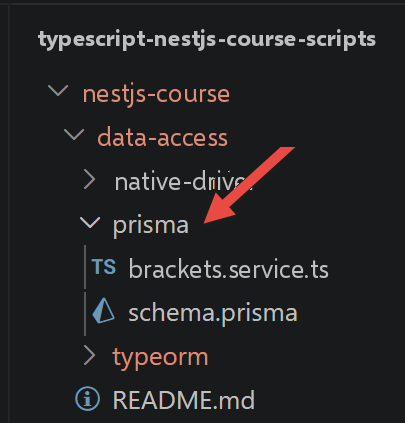
schema.prisma
我们来拆解这段代码：
- 第 1 行：[// schema.prisma] —— 这个文件不是 TypeScript，而是用 Prisma 自己的描述语言编写的文件，即 Prisma Schema Language；
- 第 2 行：[model Bracket {] ——
model关键字声明一个名为Bracket的 Prisma 模型——之后prisma generate会根据这个模型生成一个TypeScript类及相关方法； - 第 3 行：[id Int @id @default(autoincrement())] —— @id 将 id 字段标记为模型的主键；@default(autoincrement()) 表示其值由数据库通过自增自动生成——相当于上文所见 TypeORM 中的 @PrimaryGeneratedColumn() 在 Prisma 中的对应写法；
- 第 7 行：[@@map("tbbrackets")] —— 一个“块”属性（以两个 @ 符号为前缀，因为它作用于整个模型而不是单个字段），用于指定实际的 SQL 表名 tbbrackets ——相当于 TypeORM 中传给 @Entity('tbbrackets') 的参数。
[brackets.service.ts] 文件内容如下：
我们来解读这段代码：
- 第 1 行：[const brackets = await this.prisma.bracket.findMany({ ... })] —— this.prisma 在这里指的是一个注入的 PrismaService （本课程不涉及），它公开了由
prisma generate生成的客户端；bracket是根据上面模式中的Bracket模型自动生成的属性，而findMany(...)读取其所有行——相当于前面所见Repository的find(...)方法在 Prisma 中的对应写法； - 第 2 行：[orderBy: { id: 'asc' },] —— 指定结果的排序方式——相当于传给 TypeORM 的
order: { id: 'ASC' }选项在 Prisma 中的对应写法，该选项传给find(...)方法 。
8.7.6. 应该选择哪种方式？
- 原生驱动：简单，且完全控制所执行的 SQL——这是第 6 章案例研究的默认选择，以便忠实于原 PHP 服务器，后者本身就直接使用 PDO；
- TypeORM：与 Spring Data JPA / Hibernate 最接近，当实体和关系的数量增长时很有用；
- Prisma：最“现代”的方式（完全生成的类型），目前推荐用于新项目，但如果你来自 Spring Data JPA，则不那么容易上手。